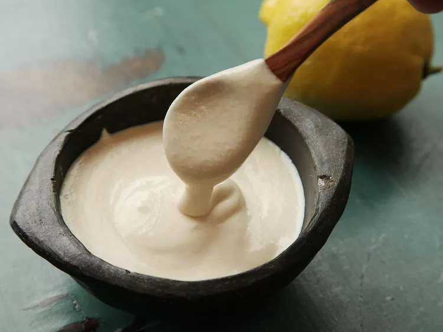

Tahina

Sesame paste based sauce with lemon, garlic, and cumin. Great on salads and sandwiches, or served with veggie sticks or falafel for dipping.
- 4 cloves garlic
- 1 cup tahini
- 2/3 cup lemon juice
- 1/2 tsp cumin or more to taste
- Salt to taste
- Water to desired thinness
- Grate garlic or smash into a paste with a garlic press
- Mix together tahini, lemon juice and cumin. This will initially thicken the tahini and you'll think you're doing something wrong
- Continue adding water and mixing until homogenous until the desired consistency is achieved. The add salt to taste